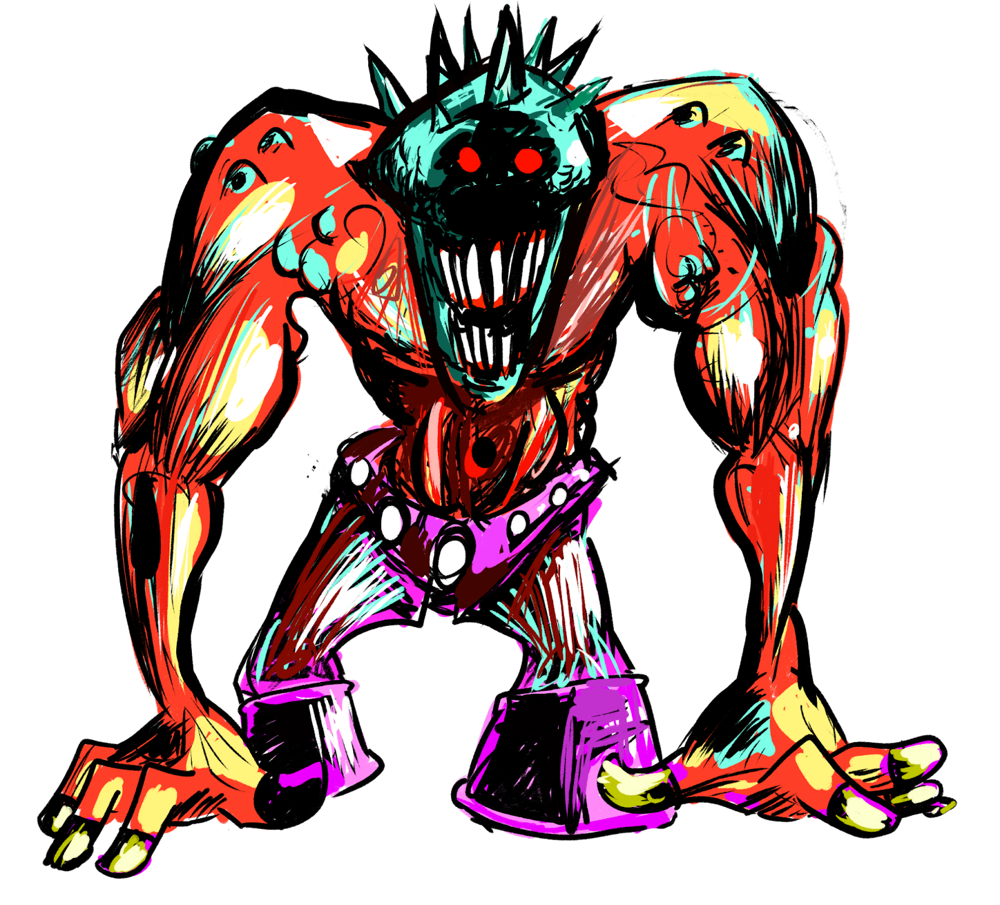
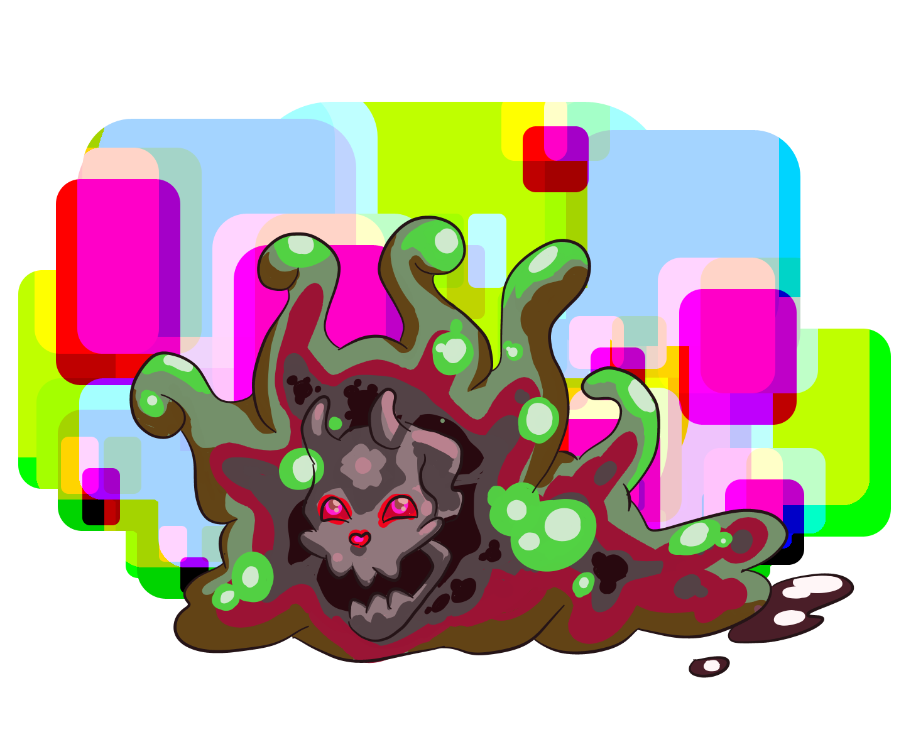
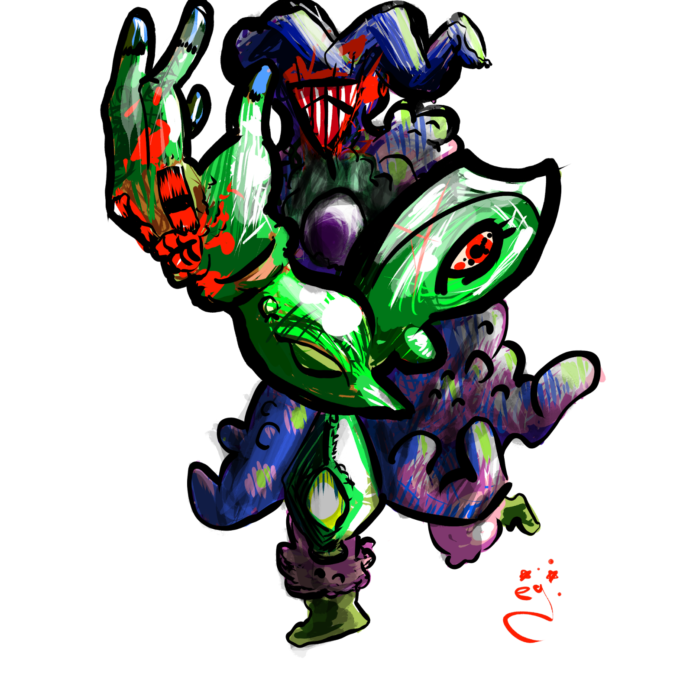
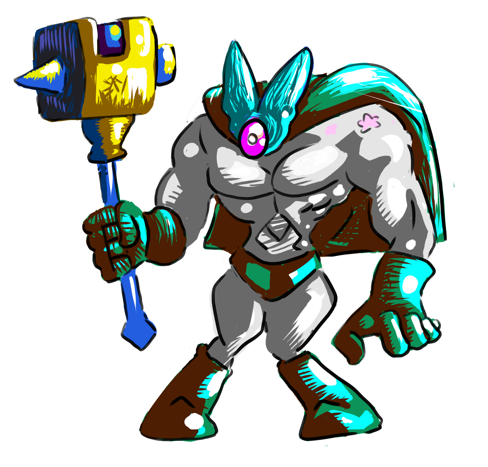
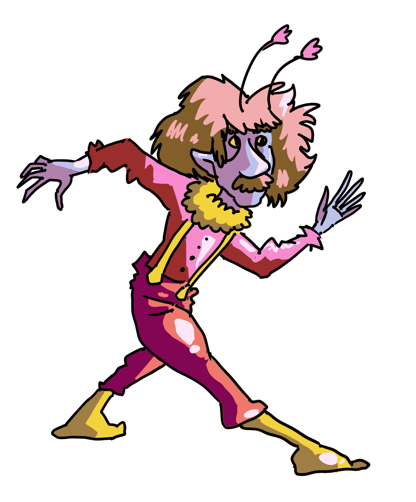
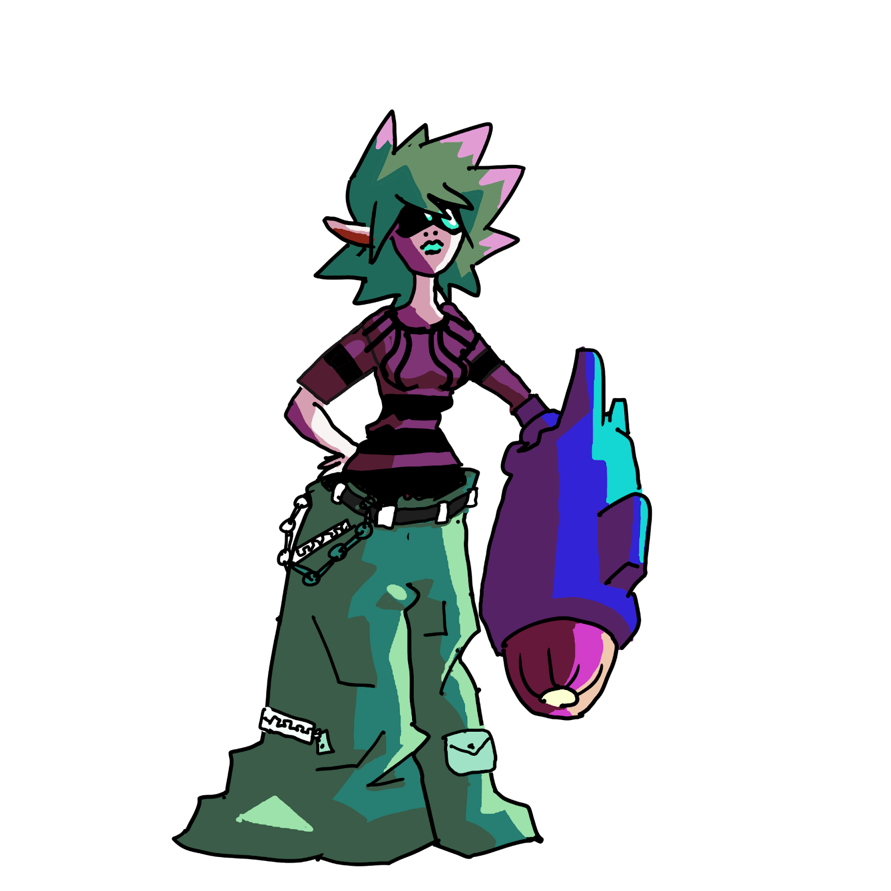
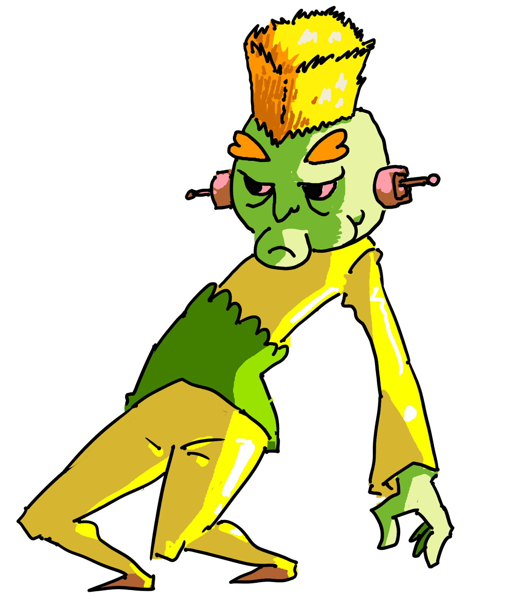

Minor FloobThe Minor Floob, a diminutive creature native to the marshy outskirts of Terra Megalithia, thrives in the damp and shadowy nooks of the world. Comprising an amorphous, slime-like body, it possesses a curious ability to navigate through the smallest of openings, making it a frequent, if not startling, visitor in the homes of unsuspecting residents. Despite its eerie appearance, the Minor Floob is largely benign, feeding off the algae and microscopic organisms found in stagnant waters. However, when threatened, it employs its corrosive attack to defend itself, dissolving anything in its path. Legends speak of the Floob's unique reproductive process—mitosis—allowing it to clone itself when resources are abundant, leading to sudden swarms that baffle both scholars and adventurers alike.
feeding off the algae and microscopic organisms found in stagnant waters. However, when threatened, it employs its corrosive attack to defend itself, dissolving anything in its path. Legends speak of the Floob's unique reproductive process—mitosis—allowing it to clone itself when resources are abundant, leading to sudden swarms that baffle both scholars and adventurers alike.
AbilitiesCorrosive Attack Action Type: Standard, Decisive It chooses a target within 5 ft of itself. It rolls +4 vs your Agility Threshold. On a hit it deals 4/8 damage. Mitosis Energy Cost: 1 Action Type: Standard, Decisive Minor Floob can perform this ability as long as its HP is 10 or above. This creature splits into two new jellies in two unoccupied spaces within 5 feet of itself. The two new Minor Floobs have half the HP and energy of the original. |
Lv .2 Slime Creature
Experience Granted: 12 Square Feet: 5 Height: 2’0” Speed: 10 feet Immune to sharp damage. Weak to fire damage. Amorphous.
|
Spiky Heady"This dude is spiky and tough!."  Melee Attack Action Types: Standard, Decisive It chooses a target within 5 ft of itself. It rolls +6 vs your Agility Threshold. On a hit it deals 3/6 blunt damage. Heavy Attack Energy Cost: 1 Action Types: Standard, Decisive It chooses a target within 5 ft of itself. It rolls +6 vs your Agility Threshold. On a hit it deals 10/15 blunt damage. |
Lv 1 Fae Creature
Experience Granted: 24 Square Feet: 5 Height: 5’0” Speed: 20 feet
|
Major FloobThe Major Floob, a more formidable variant of its minor counterpart, dominates the deeper recesses of Terra Megalithia's swamps and marshlands. This larger, more aggressive slime creature has adapted to its environment with a greater degree of cunning and resilience. Its body, a dense mass of gelatinous matter, can engulf prey and obstacles alike, demonstrating an unsettling ability to reshape its form for attack or defense. Unlike the benign Minor Floob, the Major Floob is a guardian of the swamp's secrets, fiercely defending its territory from intruders  Potent Corrosive Attack Action Types: Standard, Decisive Targets one creature within 10 ft, rolling +7 against the target's Agility Threshold. On a hit, it deals 6/12 corrosive damage, demonstrating its evolved defensive mechanism. Advanced Mitosis Energy Cost: 1 As long as its HP is above 20, the Major Floob can spawn two Minor Floobs in adjacent unoccupied spaces, showcasing its enhanced reproductive capability under threat. |
Lv 2 Slime Creature
Experience Granted: 32 Square Feet: 5 Height: 2’0” Speed: 10 feet Immune to sharp damage. Weak to fire damage. Amorphous.
|
Red MouthoA corrupted fae creature who is oddly stealthy for how big he is.  Slam Dance Action Types: Standard, Decisive Targets one creature within 10 ft, rolling +8 against the target's Agility Threshold. On a hit, it deals 5/10 blunt damage. Bite Action Types: Standard, Decisive Energy Cost: 1 Targets one creature within 5 feet. Makes a +8 vs target’s Agility Threshold roll against that target.. On a hit, it deals 6/12 sharp damage. If this hit made a double or triple, the target is now poisoned. Hecka Dodge Action Types: Extra, Response If something attacks Red Moutho and misses, Red Mouth may use this ability to move 10 feet. |
Lv 2 Fae Creature
Experience Granted: 32 Square Feet: 10 Height: 6’0” Speed: 25 feet Immune to damage of magical attacks. Weak to blunt damage.
|
Sporcerer
Spore Pollen Attack Action Types: Standard, Decisive Energy Cost: 5 Sporcerer makes a +7 roll against all targets of its choosing within a 30 foot range. For every hit, those targets take 4/6 poison damage. Death Cap Action Types: Standard, Decisive Energy Cost: 1 Targets one creature within 5. Makes a +7 vs target’s Strength Threshold roll against that target. On a hit, it deals 5/10 poison damage. If this hit made double or triple, the target is now poisoned. Minor Teleport Action Types: Extra, Decisive Allows Sporcerer to move up to 20 feet away. Response abilities do not trigger for this movement. |
Lv 2 Fae Creature
Experience Granted:12 Square Feet: 5 Height: 4’0” Speed: 15 feet Immune to poison.
|

Hammerdin Hammer Attack Action Types: Standard, Decisive Targets one creature within 10 ft, rolling +5 against the target's Agility Threshold. On a hit, it deals 5/8/12 blunt damage. Hammer Time Energy Cost: 1 Action Types: Standard, Decisive Targets one creature within 10 ft, rolling +5 against the target's Agility Threshold. On a hit, it deals 5/10 blunt damage and the target is slowed (the target loses 1 standard action and her movement speed is halved for 1 minute). |
Lv 3 Fae Creature
Experience Granted: 21 Square Feet: 5 Height: 6’0” Speed: 25 feet Resistant to ice and fire damage.
|
Armork
Spiky Shield Attack Action Types: Standard, Decisive Targets one creature within 5 ft, rolling +8 against the target's Agility Threshold. On a hit, it deals 7/12 sharp damage and is pushed back 5 feet. |
Lv 2 Fae Creature
Experience Granted: 21 Square Feet: 5 Height: 5’0” Speed: 25 feet Resistant to blunt and sharp damage.
|

Scissisector
Scissor Attack Action Types: Standard, Decisive Targets one creature within 5 ft, rolling +5 against the target's Agility Threshold. On a hit, it deals 5/10 sharp damage. Salacious Scissor Spinner Energy Cost: 1 Scissisector makes a +5 roll against all creatures within 5 feet of it. For every hit, it deals 5/10/15 sharp damage to those creatures. |
Lv 2 Robot Creature
Experience Granted: 21 Square Feet: 5 Height: 5’0” Speed: 25 feet Immune to sharp damage.
|

T. Swifty“What a fast dude!!”  Swifty Attack Action Types: Standard, Decisive Targets one creature within 5 ft, rolling +8 against the target's Agility Threshold. On a hit, it deals 3/6 blunt damage. |
Lv 3 Fae Creature
Experience Granted: 21 Square Feet: 5 Height: 4’0” Speed: 60 feet
|
Blastoraveo Blaster Attack Action Types: Standard, Decisive Targets one creature within 50 ft, rolling +8 against the target's Agility Threshold. On a hit, it deals 5 plasma damage. Massive Blast Energy Cost: 20 Action Types: Standard, Decisive Targets one creature within 50 ft, rolling +9 against the target's Agility Threshold. On a hit, it deals 10/15 plasma damage and the target is slowed (the target loses 1 standard action and her movement speed is halved for 1 minute). |
Lv 2 Fae Creature
Experience Granted: 21 Square Feet: 5 Height: 5’0” Speed: 25 feet
|
Shocklouch Throat Chop Action Types: Standard, Decisive Targets one creature within 10 ft, rolling +7 against the target's Agility Threshold. On a hit, it deals 5/10 blunt damage. Electric Slide Energy Cost: 1 Action Types: Standard, Decisive Shocklouch moves up to 25 feet. All creatures that were in the way of this movement are a target of this ability. Sloucho makes +7 vs Strength Threshold roll against those targets. On a hit, it deals 5/10 electric damage. Zappo Energy Cost: 1 Targets one creature within 30 ft, rolling +7 against the target's Strength Threshold. On a hit, it deals 5/10 electric damage and the target is dazed. |
Lv 2 Fae Creature
Experience Granted: 21 Square Feet: 5 Height: 4’0” Speed: 25 feet Immune to electric damage.
|